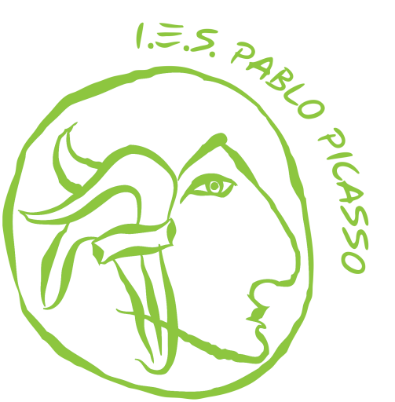
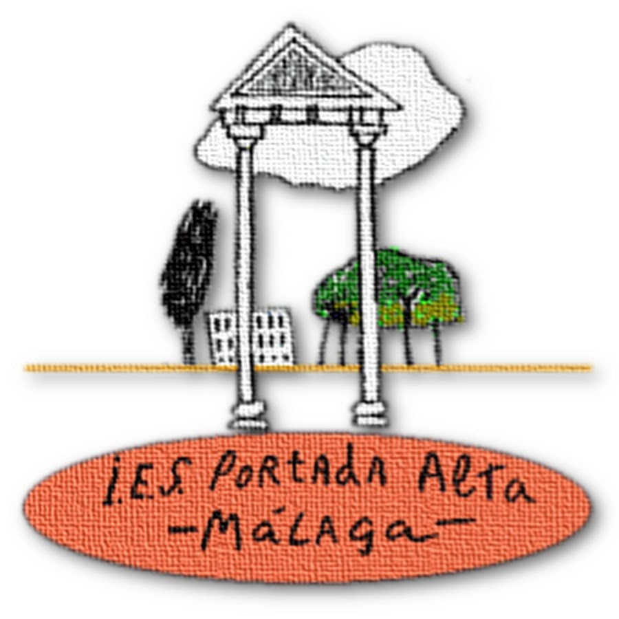

IES Pablo Picasso
https://www.eliaspedrosa.iespablopicasso.com
- Formación en diseño, desarrollo y mantenimiento de aplicaciones móviles y de escritorio.
- Aprendizaje de lenguajes como Java, MySQL y tecnologías actuales de programación.
42 Málaga Fundación Telefónica
https://www.eliaspedrosa.42malaga.com
- Proyecto basado en aprendizaje autónomo y colaborativo, con enfoque en lenguajes como C y desarrollo de software.
- Implementación de proyectos complejos como Libft y Printf, fortaleciendo habilidades en algoritmos y estructuras de datos.

IES Portada Alta
https://www.eliaspedrosa.iespostadaalta.com
- Formación práctica en configuración y mantenimiento de sistemas informáticos y redes.
- Desarrollo de habilidades en soporte técnico y resolución de incidencias.